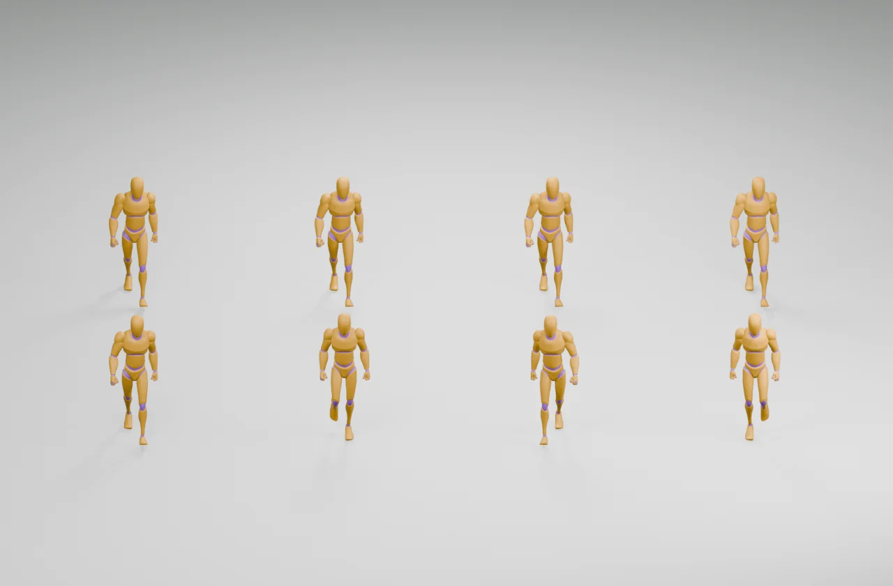

Shared phase
All four characters reach each foot plant together. A busy street can look like a chorus line even when their paths differ.
Rising Ashes · visual QA concept
This side-by-side uses the same real walk clip, rig, speed, and camera for every figure. The top row starts together. The lower row starts at four different points in the loop. Change the sampled frame or play the cycle to compare their crowd rhythm.

Frame 00 / 32 · same clip timing; the lower row retains its per-actor phase offsets.
All four characters reach each foot plant together. A busy street can look like a chorus line even when their paths differ.
Small stable offsets break that visual lockstep without changing clip speed or inventing extra animation.
What this proves: the phase offsets work on this sample rig and clip. What it does not prove: real Rising Ashes villagers look natural in motion, their feet match travel speed, or NPCs avoid collision. Those need the game-loader animation QA and an in-game crowd route.